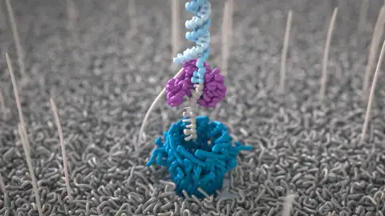
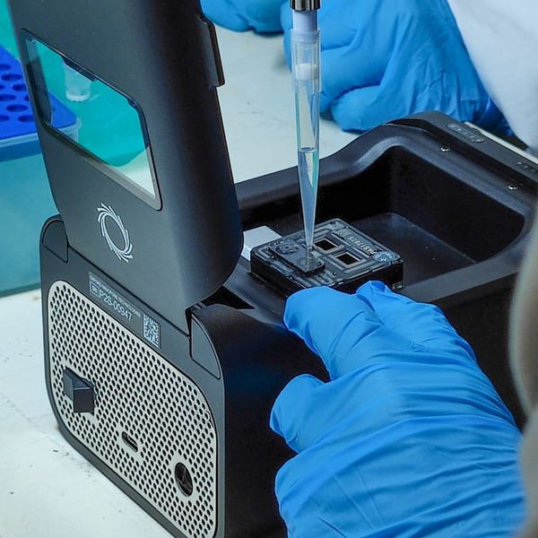
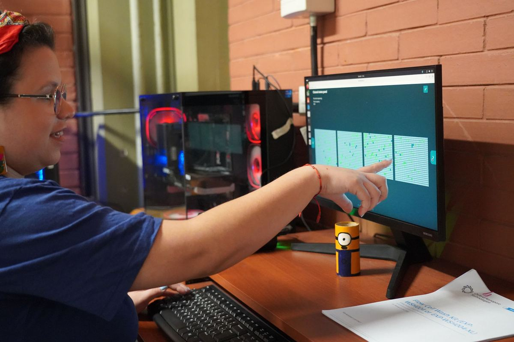
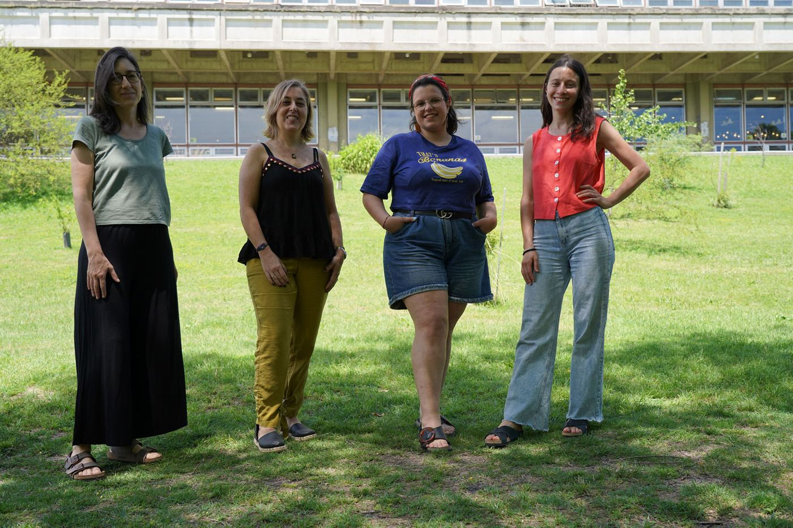
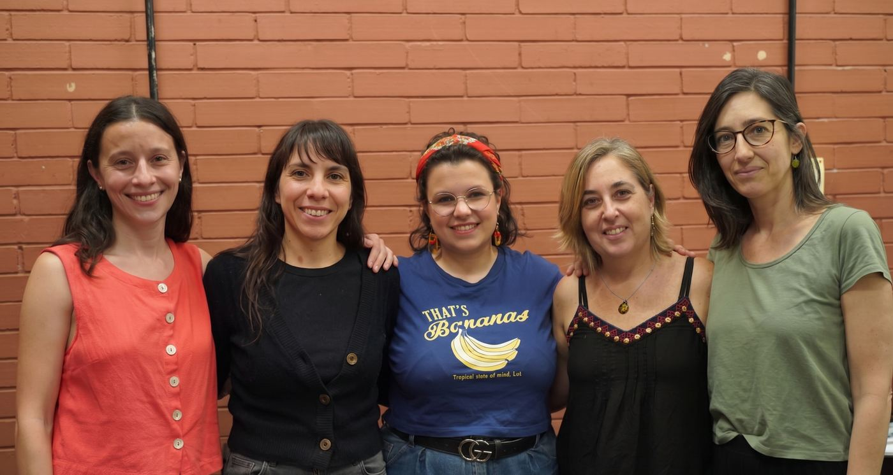

Genomas completos
Bacterias, hongos y otros eucariotas. Ensamblados de novo y cerrados gracias a las lecturas largas.
Secuenciación de lecturas largas de ADN y ARN por nanoporos. Además, según lo que necesite tu proyecto, ofrecemos asesoramiento, preparación de bibliotecas y análisis bioinformático.

Somos un laboratorio consolidado en servicios de secuenciación de nueva generación (NGS), con plataformas de secuenciación de tercera generación por nanoporos. Podés contratar solo la secuenciación o sumar otras etapas: cada servicio se cotiza por separado.
Te ayudamos a elegir la estrategia de secuenciación adecuada para tu pregunta.
Control de calidad de las muestras y armado de bibliotecas según la aplicación.
Corridas en PromethION P2 Solo o MinION, según la escala del proyecto.
Análisis de los datos adaptado a cada proyecto.
Estas son algunas de las aplicaciones más frecuentes. Si tu proyecto necesita otra, consultanos.
Bacterias, hongos y otros eucariotas. Ensamblados de novo y cerrados gracias a las lecturas largas.
Secuencia completa del plásmido para verificar construcciones y detectar variantes.
Genes de interés, amplicones largos y marcadores como 16S o ITS de longitud completa.
Caracterización de comunidades microbianas en muestras ambientales, clínicas o industriales.
ARN directo y cDNA: transcriptos e isoformas de longitud completa.
Detección de metilación directamente sobre el ADN nativo, sin tratamiento con bisulfito.
Grandes inserciones, deleciones, inversiones y reordenamientos difíciles de ver con lecturas cortas.
Enriquecimiento de regiones de interés, incluido el muestreo adaptativo sin PCR.
Contanos qué necesitás y te asesoramos sobre la mejor estrategia.
Contanos sobre tu muestra y tu objetivo en el formulario de solicitud.
Te respondemos con la estrategia recomendada, el presupuesto y los tiempos.
Te indicamos cómo preparar y entregar el ADN o ARN.
Te entregamos los datos y, si lo contrataste, el análisis bioinformático.
En la secuenciación por nanoporos, cada molécula de ADN o ARN atraviesa un poro diminuto y los cambios en la corriente eléctrica revelan su secuencia, base por base y en tiempo real.


Alto rendimiento: dos posiciones para celdas de flujo PromethION, ideal para genomas grandes o muchas muestras.

Corridas más chicas y flexibles, con análisis bioinformático en nuestra propia infraestructura de cómputo.
La Plataforma de Secuenciación de Alto Rendimiento del Centro de Genómica (CeGen) de la Facultad de Ciencias Exactas y Naturales de la UBA permite analizar ADN y ARN a gran escala.
Acompañamos proyectos de investigación en salud, ambiente y biotecnología, y contribuimos al desarrollo y la consolidación de capacidades científicas estratégicas en el país.
Leé más en la nota de Fundacen y en la página oficial de Exactas.


Depende del tipo de muestra, la aplicación y el análisis que necesites. Completá el formulario y te enviamos una cotización con los tiempos estimados.
Trabajamos con ADN y ARN de distintos organismos y orígenes. Una vez que nos contás tu proyecto, te indicamos los requisitos de cantidad, calidad y envío.
No necesariamente: el análisis bioinformático es un servicio aparte y se cotiza por separado. Podés recibir solo los datos o sumar el análisis adaptado a tu proyecto.
Podemos asesorarte: contanos tu pregunta biológica en el formulario y te recomendamos el enfoque más adecuado.
Completá el formulario de solicitud y te contactamos con una propuesta a medida.
Solicitar un servicioPabellón 2, 2.º piso – FCEN-UBA
Ciudad Universitaria, Intendente Güiraldes 2160 (C1428EGA), Buenos Aires